01
General
CorrigéGrandes cartes de thème, changement immédiat, raccourcis et liens vers personnalité, mémoire et audio. Les raccourcis de navigation manquants ont été ajoutés.
Voir les captures natives
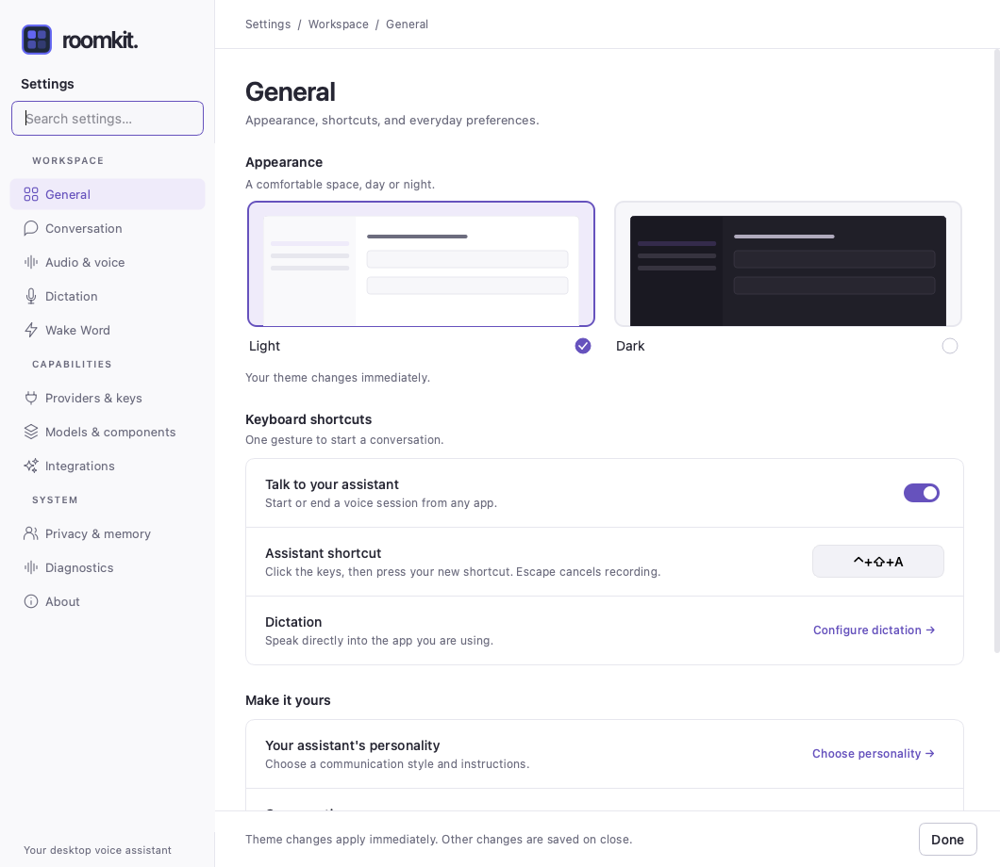
La direction visuelle de l’artefact est maintenant mieux suivie dans l’ensemble des Settings. Ce passage a corrigé les sous-pages restées compactes et plusieurs détails d’interaction. La version native conserve quelques différences explicites avec la maquette.
Grandes cartes de thème, changement immédiat, raccourcis et liens vers personnalité, mémoire et audio. Les raccourcis de navigation manquants ont été ajoutés.

Choix Realtime / Voice Channel et pipeline conformes au langage de l’artefact. La personnalité précède les instructions et affiche son texte réel. Gestion des presets avec recherche, actions explicites et formulaire aéré ; réglages Gradium harmonisés.
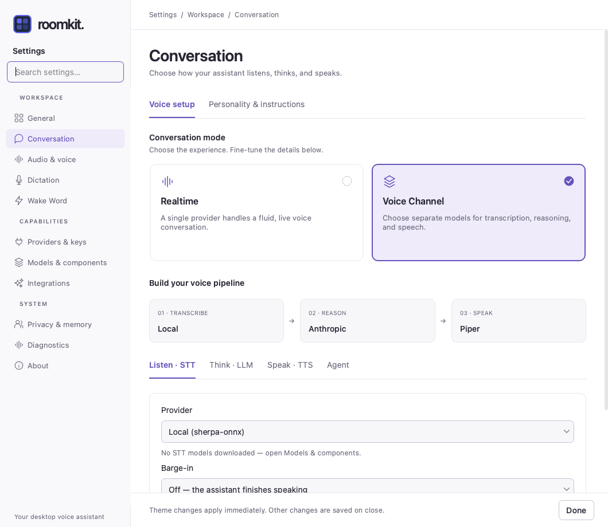
Onglets replacés directement sous le titre. Formulaires et aides harmonisés. Reconnaissance des locuteurs, profils et Meta Muse présentés en cartes ; prérequis du modèle visibles et seuil dans une section avancée.
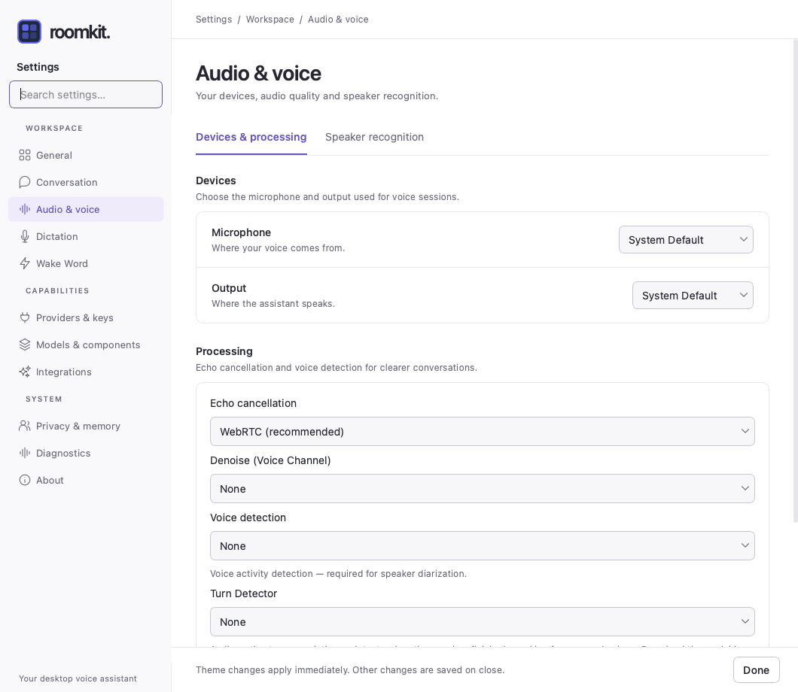
Activation, raccourci, fournisseur et modèle séparés clairement. États local, cloud et modèle absent revus ; les contrôles suivent le fournisseur choisi.
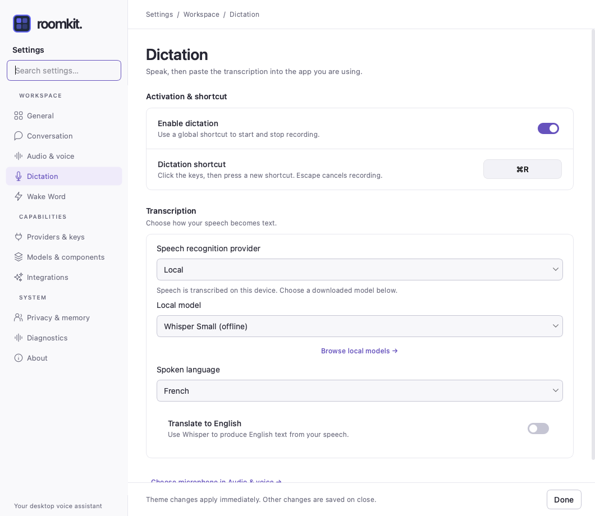
Activation, sensibilité, phrase et prérequis identifiables. États prêt, configuration requise et téléchargement revus. Les messages distinguent ce qui s’applique à la fermeture et les opérations immédiates.
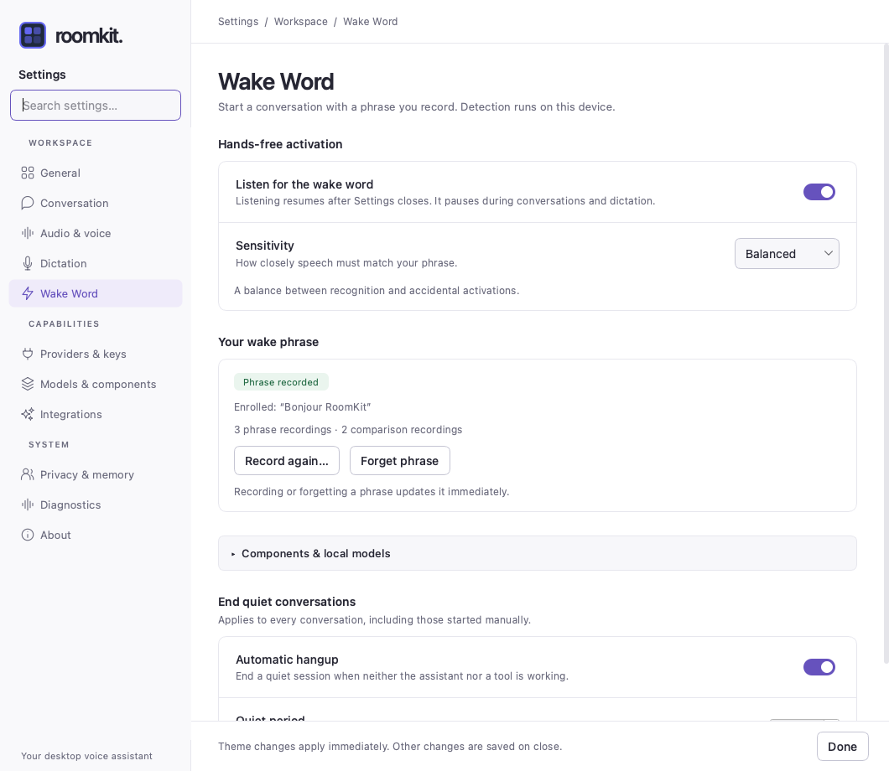
Second passage après comparaison directe : carte cloud regroupée, section locale distincte, statuts et action Manage par ligne. Les clés s’ouvrent à la demande. Le premier bilan surestimait la fidélité de cette page.
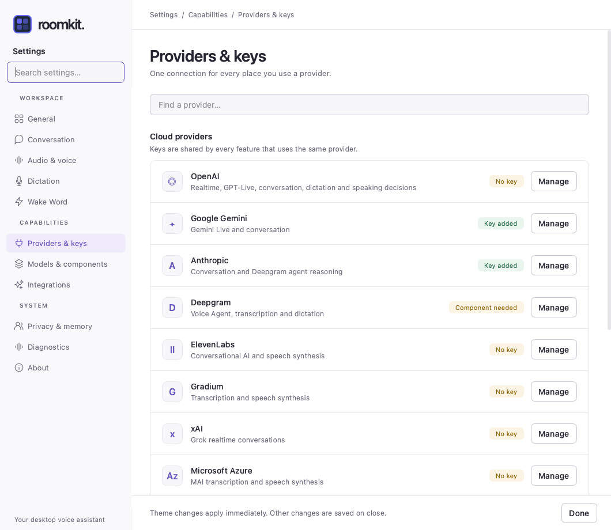
Onglets communs, recherche, filtres, catégories et statuts lisibles. La bibliothèque complète utilise des lignes de catalogue ; les grandes cartes restent réservées aux choix structurants.
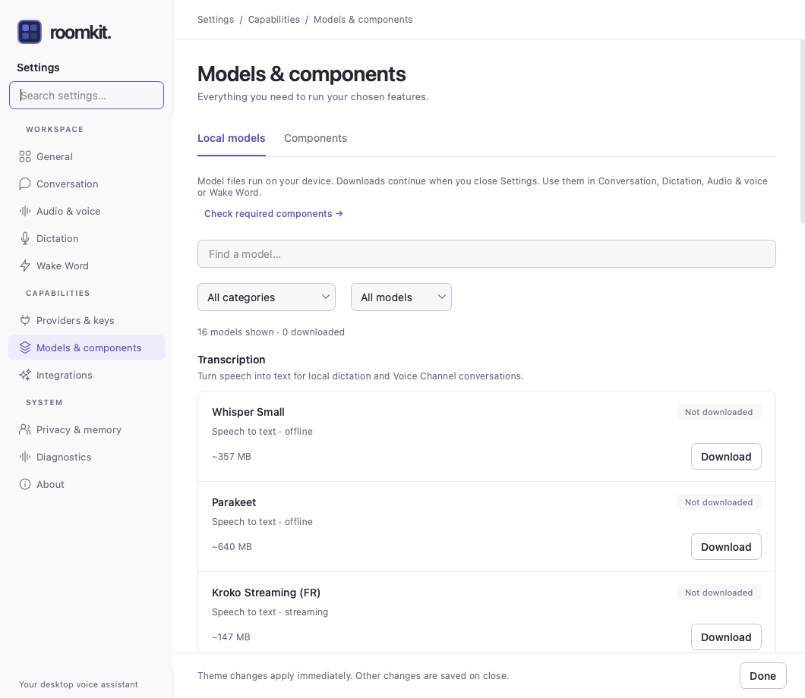
Second passage après comparaison directe : ordre MCP / CLI / Skills, grandes cartes vides, actions par entrée et listes regroupées. La vue Skills donne accès au catalogue en ligne via « Browse skills.sh » en tête de page et garde un lien dédié aux sources, sans sous-onglets imbriqués. Le premier bilan surestimait la fidélité de cette page.
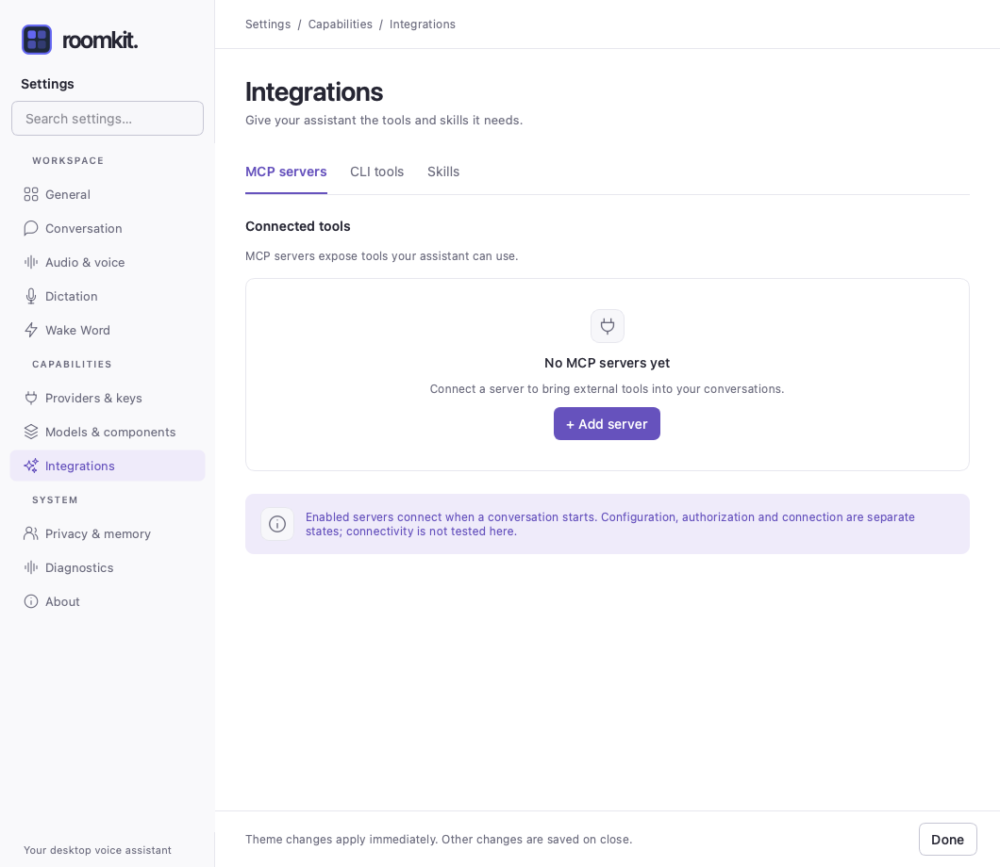
Distinction entre stockage local et traitement cloud ajoutée. Chemin de l’historique sélectionnable sans élargir la page. Liens vers fournisseurs, enregistrements et onglet Telemetry.
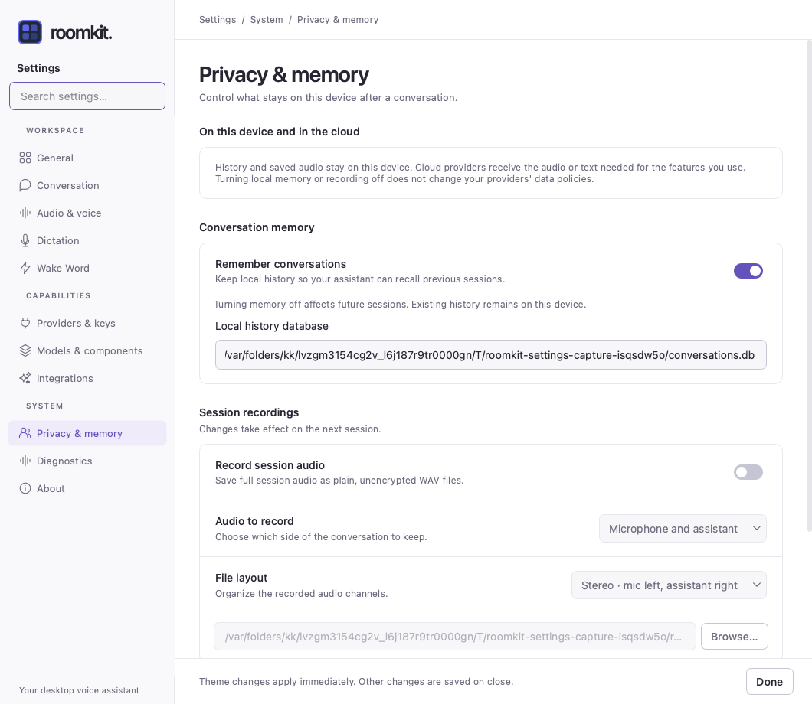
Fichiers audio, capture du pipeline et télémétrie organisés en trois onglets. Filtres, actions, dossiers et états d’export revus.
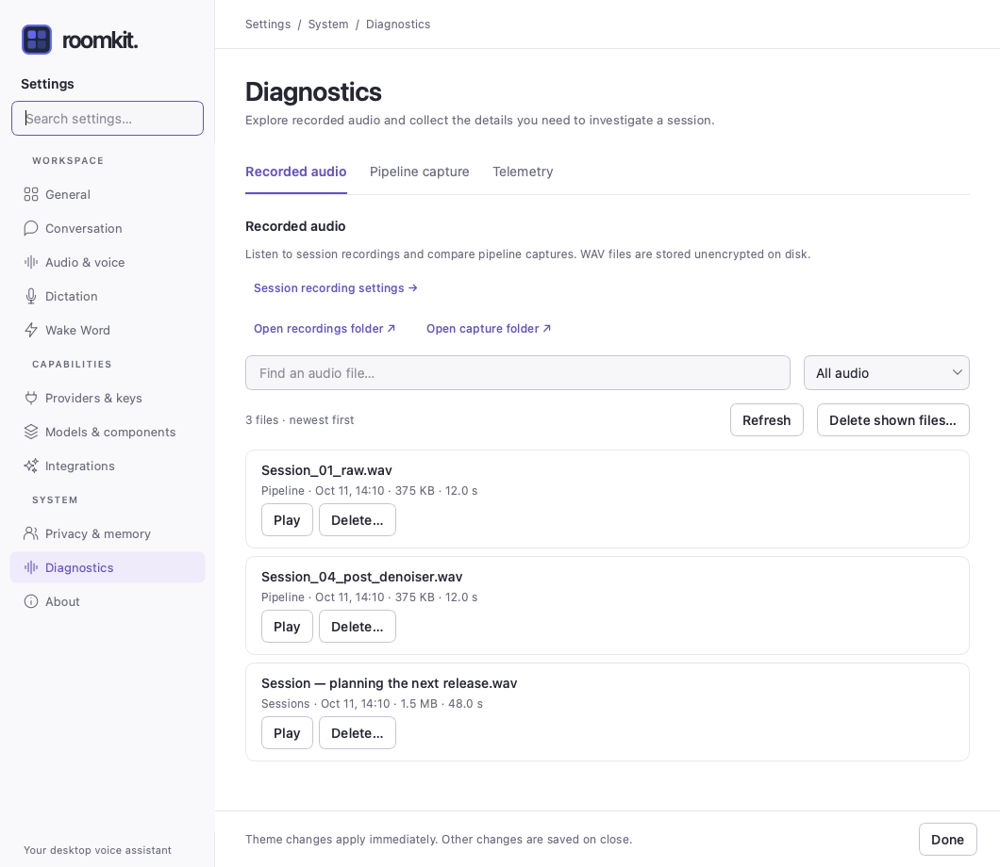
Informations réelles de version et de plateforme, copie et licence repliable dans les composants communs.
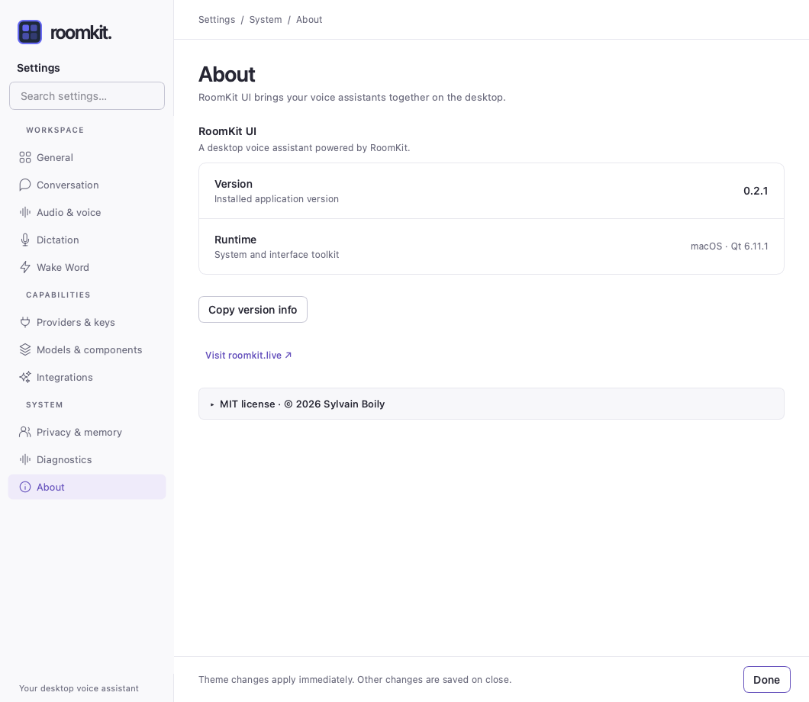
Suppression des boutons compacts +/− et des styles locaux des personnalités et locuteurs ; réutilisation de la liste, des formulaires, interrupteurs, messages et sections avancées communs. Suppression du mécanisme Gradium dupliqué, du message d’erreur temporaire porté par le bouton d’inscription et d’une méthode de ligne devenue inutile. Les aides des fournisseurs utilisent les mêmes styles sémantiques.
Le rafraîchissement des locuteurs masque désormais immédiatement les anciens widgets : le message de liste vide ne se superpose plus à un profil ajouté. Le choix d’un modèle devenu indisponible est conservé. Recherche et liens profonds révèlent les bons onglets sans enregistrer les préférences.
Suite complète : 1 144 tests réussis, 1 ignoré. Ruff (analyse et formatage), Mypy (162 fichiers source), Bandit et vérification des différences passent. Le bilan HTML a aussi été vérifié dans Chrome à 390, 820 et 1400 px : 78 captures accessibles, changement de thème et aucun débordement ni erreur JavaScript.
Captures Qt générées sur macOS avec réglages, secrets et données temporaires. Les exemples de profils, intégrations et téléchargements sont des données de démonstration. Les prises de vue n’ont déclenché ni enregistrement, ni téléchargement, ni export réseau.
Contrôles de navigation au clavier, affichage des sections avancées, conservation des valeurs et renouvellement des listes couverts par les tests. La largeur minimale de la capture Qt est de 800 × 620 ; les vues principales sont capturées à 1060 × 920. La revue porte sur la fidélité visuelle et les parcours UI ; elle ne certifie pas l’accessibilité avec lecteur d’écran, le rendu Windows/Linux ni le fonctionnement réel de chaque fournisseur.